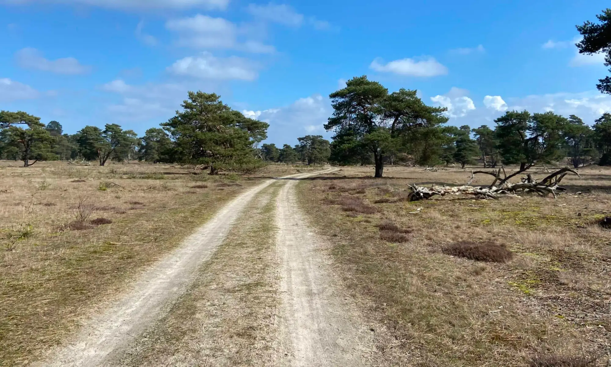
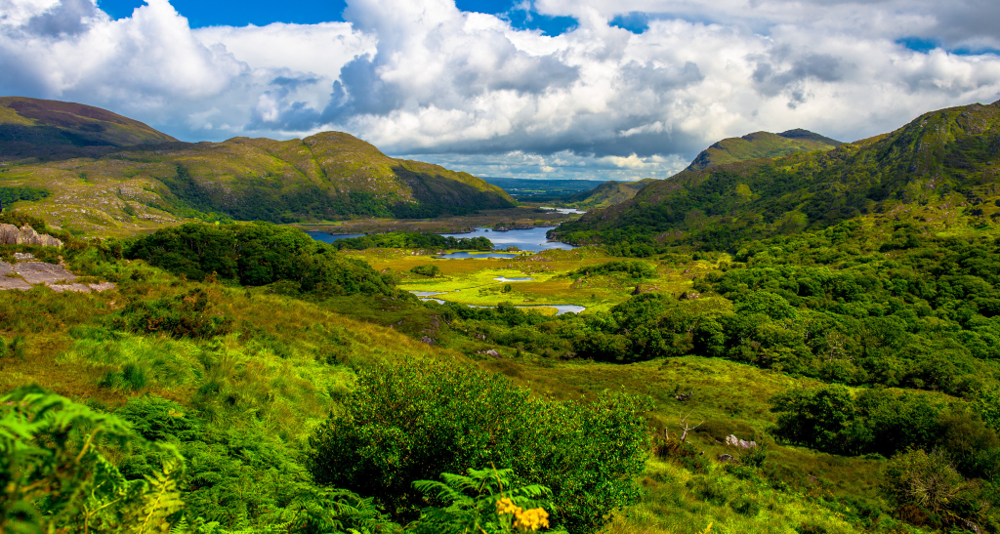

Train of thought
After spending some time going back to college, completing it, I was drawn by a feeling of want. I thought it was not fair that I would have to limit myself to the ways that other people made for me.
After thinking about what that meant for me I got to the sporadic conclusion that what i needed was to be an adventurer for a while. And for that, what i needed most was a goal to venture towards without too much preperation. There have been a trend in my life where I struggled with the unknown and i felt like it was hindering my ability to govern my own life, which i found was a big problem for me.
My first trip was supposed to be a train journey before anything else. But that idea in itself felt like it would limit my travel to wherever the tracks were laid out. After this conclusion I contemplated renting motor scooters and that is where my Dutch side came into play, because cycling is one of the staples of Dutch "Identity", whatever that means.
I bought my Olivia and all the things that I required and I left to start a hobby that I, hopefully, will not let go for a long time.
My Travels

Amsterdam to Slovenia
My debut journey that got me really into bikepacking. this 2100 kilometer route took me from my hometown near Amsterdam, along the Rhine river, to the south of Germany. After this I followed the alps untill Salzburg and then crossed over to eventually reach Ljubliana, Slovenia.
Read More
Green Divide
The Green Divide route is a 350 kilometer route the you can ride in the Netherlands. The route starts near my hometown and it leads you through beautiful towns while taking almost no other routes other than off road or forest paths.
Read More
Geneva to Portugal
This is my latest ambition. I wish to take a Flixbus to Geneva and start riding from there. The journey will take me around 2000 kilometers through the south of France and the north of Spain, ending in Porto. no GPS, no google maps, just vibes.
Read More
Amsterdam to Ireland
My friend wanted to do a wildcamping adventure in Ireland and I needed filler content. So we will be heading off to Ireland by bike for this. This journey will take us 1200 kilometers through some of the most uninspiring nature this world can throw our way to end up in the lovely country of Ireland.
Read More